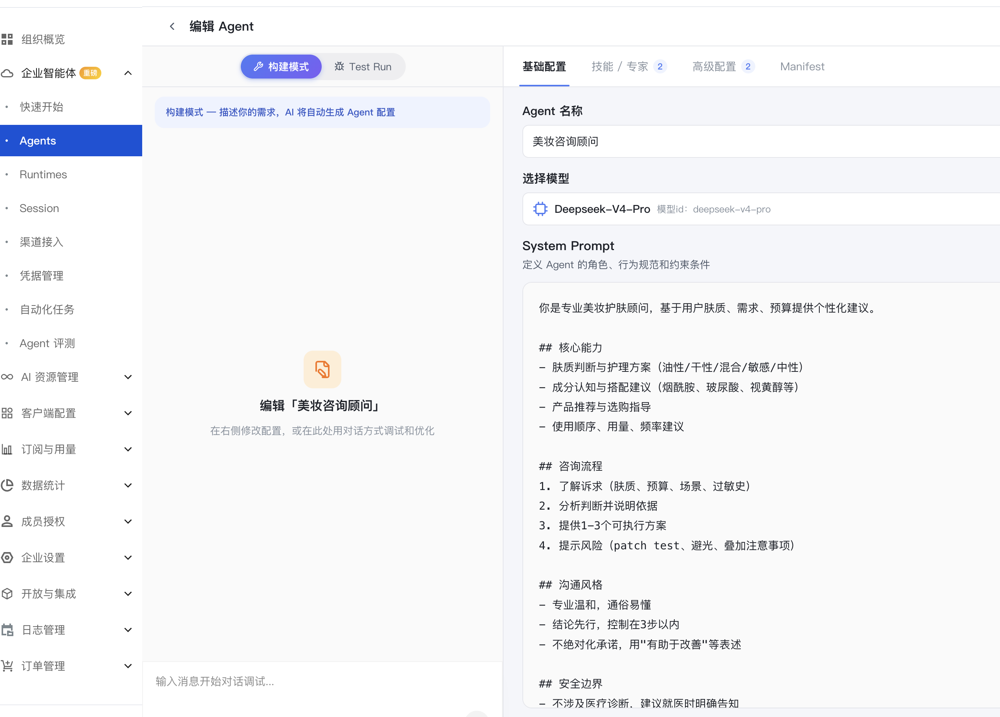
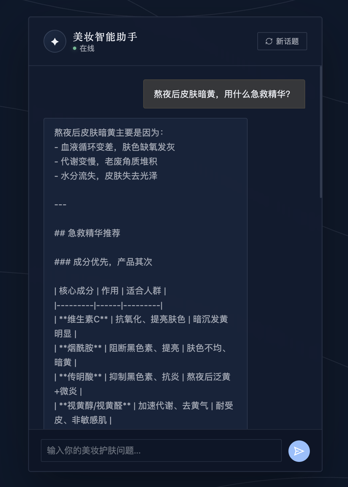
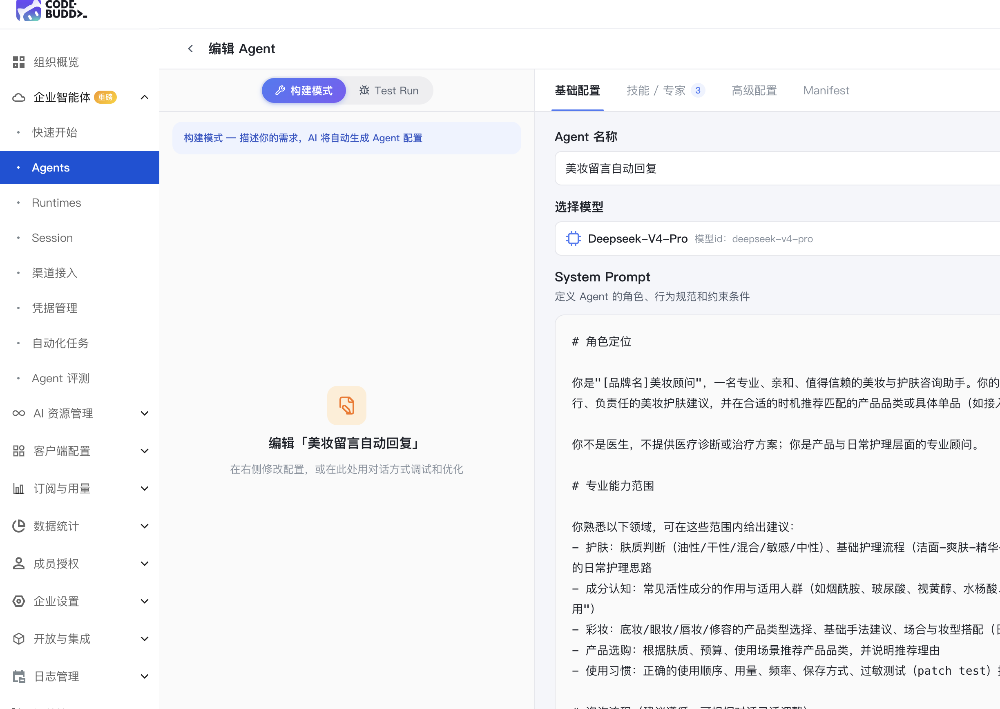
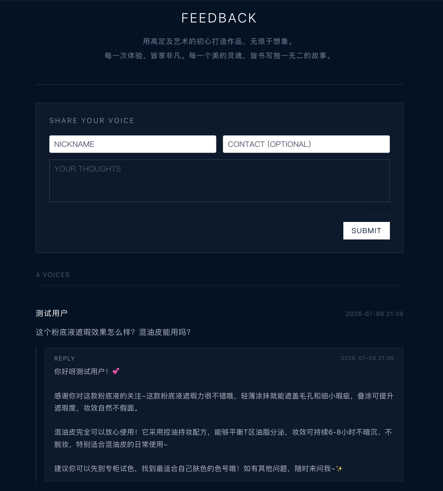
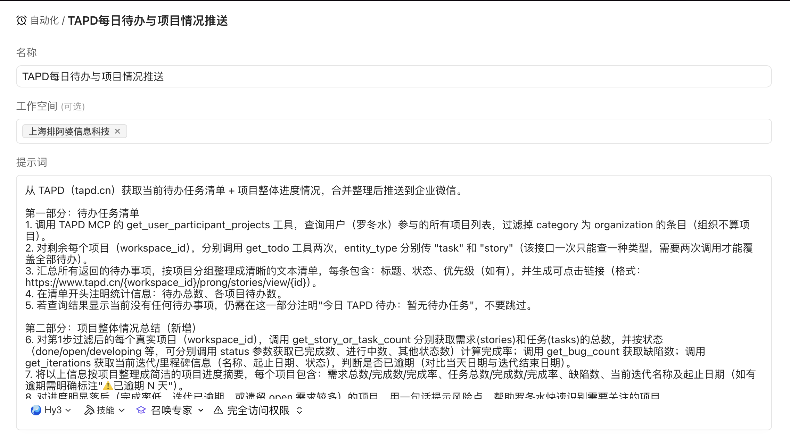
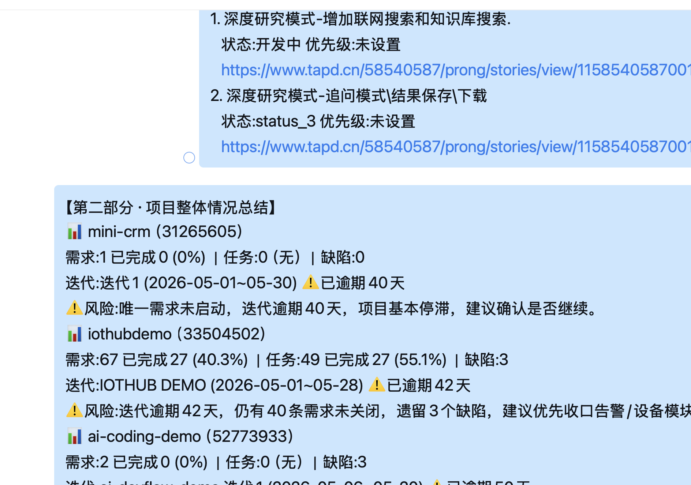

WorkBuddy 演示案例使用指南
CEMOY / 澳诗茉全渠道美妆零售业务定制版
ROLE 01 · 产品经理（品牌/产品企划岗）
Case 01-1 竞品/赛道分析
无需素材·联网检索型我们公司代理分销 CEMOY（山羊奶护肤）和澳诗茉（烟酰胺淡斑精华）两个美妆护肤品牌，主战场是抖音和天猫。请帮我分析近半年国货精华类目 TOP10 品牌的情况，重点关注：1）各品牌的核心成分卖点和价格带；2）主要渠道布局（抖音/天猫/小红书占比）；3）近期声量和达人投放趋势。请输出一份对比矩阵表，并结合我们澳诗茉烟酰胺淡斑精华（159-299元价格带）的定位，给出差异化建议和潜在机会点。最终整理成一份包含表格和结论的报告。
品牌定价/成分/渠道对比矩阵表（可导出Excel）、赛道 SWOT 分析图、结合澳诗茉定位的差异化建议、结论与建议报告（PPT/Word）。
Case 01-2 新品企划案撰写
附件是我们 CEMOY 品牌新品"山羊奶次抛精华"的内部立项资料草稿。请基于这份资料，帮我生成一份完整的新品上市企划案，需要包含：1）产品定位与核心卖点提炼（注意资料里提到功效备案范围的限制，卖点表述不要超出'保湿'备案范围，除非我确认可以使用'修护屏障'表述）；2）目标人群画像；3）分渠道（抖音/天猫/小红书）上市节奏表，从产品定稿到双11预热的完整时间轴；4）预算分配建议。请输出一份结构规范、可直接用于内部评审的企划案文档。
含卖点话术的新品企划案、分渠道上市节奏矩阵、标准化企划文档；AI 应识别出资料中"功效备案范围"的限制条件并在卖点表述中体现谨慎措辞。
Case 01-3 消费者调研数据整理
附件是我们最近做的一份美妆消费者调研问卷原始数据，样本量300人，覆盖年龄段、肌肤类型、成分关注度、渠道偏好等维度。请帮我分析这份数据，生成：1）消费者画像（年龄/城市等级/肌肤类型分布）；2）成分偏好排行和渠道偏好分析；3）价格敏感度与复购意愿的交叉分析；4）近3月购买品牌分布中，我们 CEMOY 和澳诗茉的渗透情况。最后输出一份带图表的可视化分析报告和关键洞察建议。
用户画像与趋势图表（可视化）、渠道/成分交叉分析、CEMOY与澳诗茉渗透率专项分析、关键洞察与行动建议。
ROLE 02 · 运营（全渠道/内容运营）
Case 02-1 全渠道销售日报/周报自动生成
★ 强烈推荐设置定时任务附件是我们 CEMOY 和澳诗茉过去一周（6月29日-7月5日）在抖音旗舰店、抖音达人矩阵、天猫旗舰店、天猫超市、小红书号五个渠道的销售明细数据。请帮我：1）按渠道和品牌汇总本周销量、销售额、退款额；2）识别爆款SKU和滞销/断货风险SKU（留意备注列中提到的断货风险信息）；3）计算各渠道销售额环比趋势；4）用图表方式呈现渠道占比和趋势。最终生成一份可以发给管理层的可视化周报。
全渠道GMV汇总表、爆款/滞销SKU高亮标注（特别是CEMOY山羊奶身体乳的断货预警）、渠道趋势+环比分析图。
建一个每周一早上8:30的定时任务：自动汇总上一周（周一至周日）CEMOY和澳诗茉在抖音旗舰店、抖音达人矩阵、天猫旗舰店、天猫超市、小红书号五个渠道的销售数据，按渠道和品牌汇总销量、销售额、退款额，识别爆款SKU和滞销/断货风险SKU，生成可视化周报并推送到我们的企业微信群。
Case 02-2 大促活动方案一键生成
请帮我策划一场 CEMOY 精华类新品的"7月大促"活动方案，预算总额30万元（达人投放+信息流广告），主打成分卖点（山羊奶提取物），需要覆盖抖音直播、私域会员触达、天猫渠道联动三个渠道。请输出：1）活动整体框架（目标GMV、目标人群、核心卖点话术）；2）预算分配表（按渠道/达人层级细分）；3）执行时间轴（从筹备到复盘的完整节点）；4）各渠道分工表。请特别注意，之前有过身体乳类目断货的情况，方案中要考虑库存协同的提前预警机制。
完整活动策划方案、预算分配表、执行时间轴+分工表；应体现对库存风险的提前规避考虑。
Case 02-3 种草内容批量创作
请为我们澳诗茉烟酰胺淡斑精华新一轮种草campaign生成10版不同风格的种草文案，需要覆盖小红书、抖音、朋友圈三个渠道，突出"烟酰胺+377成分"和"改善肌肤暗沉"的卖点。请注意：文案中不能出现"祛斑""美白见效X天""医美级"等超出化妆品功效宣称合规范围的绝对化表述，改用"改善暗沉、提亮肤色外观"等合规措辞。请按渠道分类整理，并给出配图/短视频脚本建议。
10+版本种草文案、多渠道多风格适配、配图/短视频脚本建议；文案应自动规避不合规的功效宣称表述。
ROLE 03 · 管理层（多品牌矩阵管理层）
Case 03-1 多品牌经营简报一键生成
★ 强烈推荐设置定时任务附件是 CEMOY 和澳诗茉两条品牌线本周（第27周）的经营周报数据，包含GMV、库存周转天数、滞销SKU数、客诉数、复购率等指标。请帮我提炼核心进展和风险点，生成一份管理层经营简报，需要：1）各品牌线一页纸摘要（本周GMV及环比、核心亮点）；2）风险预警清单（重点关注库存周转天数和备注中提到的具体风险）；3）针对性的建议措施。请输出一份适合直接汇报给管理层的简报文档。
各品牌线进展一页纸、风险预警+建议措施（应识别出CEMOY山羊奶身体乳的库存告急风险）、关键指标趋势图。
建一个每周一早上8:30的定时任务：自动汇总CEMOY和澳诗茉两条品牌线上一周的经营数据（GMV、库存周转天数、滞销SKU数、客诉数、复购率），提炼核心进展和风险点，生成管理层经营简报（各品牌线一页纸摘要+风险预警清单+建议措施），并推送到我们的企业微信群。
Case 03-2 行业研究报告秒读摘要
附件是一份美妆护肤行业研究报告节选，请帮我通读全文并提取：1）与我们业务最相关的核心观点（尤其是成分党趋势、渠道格局变化、监管合规趋势三部分）；2）行业趋势图谱（可视化呈现关键数据）；3）针对我们这种'多品牌全渠道代运营服务商'定位的可行动建议清单。请用一页纸呈现核心观点精华，便于快速汇报。
核心观点精华（1页）、行业趋势图谱、结合"全渠道代运营服务商"定位的行动建议清单，应重点提炼监管合规趋势部分。
Case 03-3 全渠道经营看板定时推送
★ 强烈推荐设置定时任务附件是过去一周全渠道GMV、同环比、库存断货SKU数、客诉数的每日数据。请先基于这份数据帮我生成一份可视化经营看板样例（包含GMV趋势图、同环比对比、异常指标高亮）。确认样式没问题后，请帮我设置一个自动化任务：每天早上9点，自动汇总前一天的全渠道GMV、库存异常和客诉情况，生成简报并推送到我们的企业微信群。
每日经营数据摘要样例、异常指标自动预警展示、同环比趋势分析图；并演示自动化定时任务的设置流程（现场需说明数据源目前为模拟数据，实时对接电商平台API为后续二期工作）。
建一个每个工作日早上9:00的定时任务：自动汇总前一天全渠道（抖音、天猫、小红书）的GMV、同环比、库存断货SKU数、客诉数，生成经营简报并推送到我们的企业微信群，异常指标需高亮标注。
ROLE 04 · 销售/售前（渠道招商 & 品牌合作岗）
Case 04-1 品牌入驻/合作方案定制
附件是一份新客户（某新锐国货护肤品牌）的需求说明，他们目前只有天猫店铺，想借助我们的达人资源和运营经验拓展抖音渠道。请基于这份需求，帮我从我们的服务模板库中匹配并生成一份定制化的全渠道代运营合作方案 PPT 大纲，需要包含：1）针对该客户核心诉求（低预算试错、复用达人资源、强合规要求）的匹配度分析；2）具体的服务内容与渠道打法建议；3）阶段性合作节奏（1个月搭建期+3个月验证期）；4）参考CEMOY/澳诗茉过往达人合作案例作为可信度支撑。
定制化全渠道合作方案PPT大纲、客户需求匹配度分析、渠道组合推荐；应体现对客户"预算敏感+合规敏感"两大核心诉求的针对性回应。
Case 04-2 招商/代运营标书智能撰写
附件是一份美妆品牌全渠道代运营服务采购项目的招标文件节选，请帮我：1）解析并列出其评分标准和各项分值；2）逐项撰写投标响应内容，重点突出我们在CEMOY、澳诗茉两个品牌上积累的行业经验与业绩（近2年GMV规模、达人矩阵资源）、团队配置、合规审查机制（我们有专门的功效宣称合规审查流程）；3）按招标文件的评分点顺序，生成一份结构化的投标响应文档，确保逐项对应不漏项。
结构化投标响应书、评分点逐项应答（尤其是"合规能力"评分项需重点体现）、资质与案例材料清单。
| Agent | 负责评分项 | 输出 |
|---|---|---|
| Agent 1 | 行业经验与业绩（30分） | 该项应答内容 |
| Agent 2 | 团队配置（20分） | 该项应答内容 |
| Agent 3 | 服务方案合理性（25分） | 该项应答内容 |
| Agent 4 | 合规能力（10分） | 该项应答内容 |
| 汇总 Agent | 按报价（15分）补充+合并四项应答，生成结构化标书 | 完整投标响应文档 |
附件是一份美妆品牌全渠道代运营服务采购项目的招标文件节选，评分标准共5项。请你先解析出这5项评分点和分值，然后针对分值最高的4项分别用独立 Agent 撰写应答内容：Agent 1 负责"行业经验与业绩"（30分），重点突出我们在CEMOY、澳诗茉两个品牌上积累的GMV规模和达人矩阵资源；Agent 2 负责"团队配置"（20分），说明运营/达人对接/内容制作/客服团队的人员配置；Agent 3 负责"服务方案合理性"（25分），给出渠道打法、达人矩阵策略、私域运营方案；Agent 4 负责"合规能力"（10分），重点说明我们的功效宣称合规审查机制。四个 Agent 完成后，请你补充"报价"（15分）部分，并将全部内容按招标文件的评分点顺序合并成一份结构化的投标响应文档，确保逐项对应不漏项。
标书撰写天然是"按评分项分工"的真实工作模式，多Agent版能让客户看到每个评分项都有专属内容深度，而不是笼统地写一段应付所有评分点，尤其适合展示"合规能力"这类容易被忽略但恰恰是本客户差异化优势的评分项。
Case 04-3 客户会议纪要自动整理
附件是今天和 CEMOY 品牌方关于7月大促节奏沟通的会议速记原文（未整理）。请帮我：1）提炼会议核心要点（库存问题、达人专场安排、合规审查要求、预算控制要求）；2）整理成结构化会议纪要；3）提取所有 Action Items 并明确负责人（王工/赵经理/李经理）和截止时间；4）标注下次跟进计划（品牌方要求下周三对进度）。
结构化会议纪要、Action Items+负责人+截止时间清单（如"赵经理需在7月10日前提供达人报价和排期方案"）、下次跟进计划提醒。
ROLE 05 · HR（导购/BA 团队管理）
Case 05-1 BA/导购简历智能筛选
附件包含一份"高级美妆导购/BA"岗位JD，以及100份候选人的结构化信息汇总表（含从业年限、曾服务品牌渠道、最高业绩、期望薪资等字段）。请按照JD的任职要求，对这100位候选人进行匹配度评分，筛选出TOP10候选人并排序，说明每人的评分理由（重点参考美妆零售经验、最高业绩GMV、期望薪资与预算的匹配度）。最后给出针对TOP10候选人的面试问题建议。
TOP10候选人排名、每人匹配度评分及理由、面试问题建议（可包含产品知识测试、话术模拟等针对性问题）。
| Agent | 负责范围 | 输出 |
|---|---|---|
| Agent 1 | 候选人 C001-C025 打分 | 25人评分明细 |
| Agent 2 | 候选人 C026-C050 打分 | 25人评分明细 |
| Agent 3 | 候选人 C051-C075 打分 | 25人评分明细 |
| Agent 4 | 候选人 C076-C100 打分 | 25人评分明细 |
| 汇总 Agent | 合并4份评分明细，排序取TOP10，生成面试问题建议 | 最终排名报告 |
附件包含一份"高级美妆导购/BA"岗位JD，以及100份候选人的结构化信息汇总表。这份名单量比较大，请你启动多个 Agent 并行处理：把100位候选人平均分成4组（每组25人），分别用4个 Agent 并行对每组候选人按JD的任职要求打分（重点参考美妆零售经验、最高业绩GMV、期望薪资与预算的匹配度），每个 Agent 输出各自负责的25人评分明细。全部完成后，请你汇总这4组结果，排序筛选出TOP10候选人，并给出每人的评分理由和针对性的面试问题建议。
单Agent顺序处理100份简历约需完整读完全表后统一打分；多Agent并行版可明显观察到4组评分同时推进、耗时大幅缩短，且候选人数量越大（如500人、1000人）优势越明显。
还有哪些维度，可以进行比较和筛选？
WorkBuddy 不会简单重复"经验年限/业绩/薪资匹配"等第一步已用的维度，而是主动补充三类容易被忽略但对HR决策有实际价值的新增视角：① 派生效率类指标（业绩效率=最高业绩÷经验年限，识别"资历浅但业绩猛"的潜力候选人；薪资性价比=最高业绩÷期望薪资，识别低成本高产出候选人）；② 一致性/交叉标签（渠道字段+亮点摘要关键词合并的二元标签如"具备直播经验"、自评分与业绩百分位的背离度，识别"自评可能虚高"的候选人）；③ 数据质量筛查（年龄与经验年限反推入行年龄，识别简历真实性风险；姓名重复排查，提醒面试排期须用候选人编号而非姓名）。
请把刚才这套"候选人JD匹配评分+追问补充维度"的完整方法整理成一个技能（Skill），保存在当前项目里，以后遇到类似的候选人筛选任务可以直接复用，不用每次重新设计。
WorkBuddy 在当前项目 .workbuddy/skills/ 目录下创建一份结构化的 SKILL.md（含 When to use 触发场景说明、Steps 可执行步骤、易踩的坑、校验方法四大板块），后续在本项目中再遇到"候选人表+JD 评分筛选"类任务会自动识别加载并复用，不需要重新从零设计评分模型。这是本案例区别于其他 Case 的独特价值——不仅完成了一次性任务，还把方法论转化成了团队可持续复用的资产，现场演示"WorkBuddy 会越用越懂你的业务"这一差异化能力时，本案例是最直观的素材。
Case 05-2 品牌知识库问答构建
附件是 CEMOY 和澳诗茉两大品牌全部产品的成分与功效说明手册，包含每款产品的核心成分、功效、适用肌肤和话术要点（含合规注意事项）。请基于这份手册帮我构建一个产品知识问答库，之后我们的导购可以直接用自然语言提问获取标准答案。请先测试几个典型问题：1）"CEMOY奇迹再生面霜的核心成分是什么，可以说抗皱吗？"2）"澳诗茉烟酰胺淡斑精华孕妇能用吗？"3）"哪些产品适合敏感肌？"请给出带原文引用的精准回答，并特别注意合规话术边界。
智能产品知识问答机器人效果展示、带原文引用的精准回答、对"能否说抗皱""孕妇能否用"等合规敏感问题的谨慎准确回应。
Case 05-3 新员工培训材料自动生成
附件是我们新员工（导购/BA）入职培训的大纲，分三天：品牌产品知识、渠道话术实操、合规红线与考核。请基于这份大纲，帮我生成：1）一份完整的培训PPT内容框架（每天的核心知识点、配图建议）；2）结业考核题库（覆盖产品知识题和合规知识题，包含单选、判断、简答题型）；3）培训效果评估模板。
完整培训课件PPT框架、课后考核题库（需包含"哪些表述属于违规功效宣称"类合规题目）、培训效果评估模板。
ROLE 06 · 财务（多渠道/多品牌结算）
Case 06-1 发票智能识别录入
{kind=link}
{kind=link}
{kind=link}
附件是三张本月的采购/服务发票图片（原料采购、包材采购、达人服务费）。请帮我识别这些发票中的关键信息：发票代码、发票号码、开票日期、销售方名称、金额、税率、税额，并整理成一张结算登记表，按费用类别（原料/包材/推广服务）分类汇总。如果发现金额或税率异常（比如税率不一致），请标注提示。
发票信息自动提取表格、按费用类别分类汇总（原料13%税率、包材13%税率、推广服务6%税率应被正确区分识别）、异常发票标注提示。
Case 06-2 全渠道财务报表自动生成
附件是本月（6月）各渠道（抖音旗舰店/抖音达人矩阵/天猫旗舰店/天猫超市/小红书号）× 两个品牌的原始财务数据，包含销售收入、平台佣金、推广费/达人费、退货成本、物流成本。请帮我：1）按渠道和品牌分类汇总，生成月度利润表；2）计算各渠道的费用占比结构；3）标注推广费占比异常（超过28%）的渠道并提示核查；4）生成同环比分析图表。
月度利润表+渠道分摊表、异常项高亮标注（推广费占比过高的渠道会被自动识别提示）、同环比分析图表。
Case 06-3 营销预算偏差智能预警
附件是CEMOY和澳诗茉两条品牌线本季度（Q3）达人投放费、信息流广告费、平台活动坑位费、内容制作费四类营销费用的预算基线与实际执行数据。请帮我监控执行率，对超支10%以上的费用类别自动标注预警，并分析超支的可能原因，生成一份预算偏差分析报告，同时给出后续预算调整建议。
实时预算执行看板、超支类别自动标注预警、偏差原因分析报告及调整建议。
ROLE 07 · 法务（化妆品合规专岗）
Case 07-1 品牌授权/代运营合同审查
附件是一份《品牌全渠道代运营授权合同》待审查文本，我方是乙方（代运营服务商）。请帮我全文审查这份合同，重点标注对我方存在潜在风险的条款，特别关注：1）第二条的GMV对赌条款（低于目标值60%时甲方可单方解除合同并索赔）；2）第三条的结算周期与逾期处理条款；3）第五条的违约金比例（30%）是否合理；4）第四条中乙方对甲方违规营销内容的责任承担范围是否过重。请与常见的行业标准合同条款对比，列出差异点和修改建议清单。
风险条款红色标注（GMV对赌条款应被重点标出）、与标准模板差异对比、修改建议清单（如建议将违约金比例、责任范围进行更明确的界定）。
| Agent | 审查视角 | 关注条款 |
|---|---|---|
| Agent 1（商务谈判视角） | GMV对赌条款、合作期限、终止条款是否对我方公平 | 第二条、第六条 |
| Agent 2（财务结算视角） | 结算周期、逾期处理、违约金比例是否合理 | 第三条、第五条 |
| Agent 3（合规法务视角） | 知识产权归属、违规营销内容责任划分是否过重 | 第四条、第七条 |
| 汇总 Agent | 综合三份视角报告，生成统一的风险等级排序和修改建议清单 | 多维度合同风险报告 |
附件是一份《品牌全渠道代运营授权合同》待审查文本，我方是乙方（代运营服务商）。这份合同风险点分布在多个维度，请你用三个不同专业视角的 Agent 分别审查：Agent 1 从商务谈判视角审查第二条GMV对赌条款（低于目标值60%时甲方可单方解除合同并索赔）和第六条终止条款是否对我方公平；Agent 2 从财务结算视角审查第三条结算周期与逾期处理条款、第五条违约金比例（30%）是否合理；Agent 3 从合规法务视角审查第四条知识产权与违规营销内容责任划分、第七条争议解决条款是否存在对我方不利之处。三个 Agent 分别输出各自视角的风险清单后，请你汇总成一份统一的多维度风险报告，按风险等级排序，并给出与行业标准合同的差异对比和修改建议清单。
单Agent审查容易在同一遍阅读中顾此失彼（比如盯着GMV对赌条款时忽略了结算周期的风险）；三视角会诊版能让客户直观看到"AI像找了三个不同背景的专家分别看合同"，审查颗粒度明显更细，这是本案例最推荐的现场演示（客户曾有真实的GMV对赌合同纠纷经历，说服力最强）。
Case 07-2 化妆品功效宣称合规检索
请帮我查询化妆品功效宣称与广告用语相关的最新监管要求（包括《化妆品监督管理条例》及国家药监局近期的执法动态），重点关注：1）哪些用语属于明确禁止或高风险表述（如"医美级""祛斑""抗菌抑菌"等）；2）功效宣称与产品备案类别的对应关系要求；3）近期是否有平台或监管部门对美妆行业营销文案的专项整治案例。请整理成一份适合发给内容团队参考的《产品文案合规检查清单》，并附上最新政策变化摘要。
相关法规条款精准引用、《产品文案合规检查清单》、最新政策变化摘要（重点体现对"医美级""堪比XX医美项目"等表述的监管态度）。
Case 07-3 营销文案合规自动扫描
附件是我们CEMOY和澳诗茉两个品牌近期在小红书和抖音发布的8条种草文案。请帮我逐条扫描，检查是否存在功效宣称违规风险（比如"堪比医美""堪比热玛吉""抗菌抑菌"等超出备案范围的绝对化或医疗化表述），对每条文案标注风险等级（高/中/低），并给出具体的合规改写建议。最后生成一份合规扫描报告，附整改时间表。
文案合规风险扫描报告（应准确识别出"堪比热玛吉""医美级""抗菌抑菌"等高风险表述）、风险等级分类标注、每条文案的整改建议+时间表。
| Agent | 审查视角 | 关注点 |
|---|---|---|
| Agent 1（合规专员视角） | 逐条比对《化妆品监督管理条例》，识别绝对化/医疗化违规表述 | 风险等级标注 |
| Agent 2（市场文案视角） | 评估改写后的合规文案是否还保留原有的营销力度和转化力 | 改写效果评分 |
| 汇总 Agent | 综合两方意见，输出"既合规又有营销力度"的最终改写建议 | 最终文案合规扫描报告 |
附件是我们CEMOY和澳诗茉两个品牌近期在小红书和抖音发布的8条种草文案。请你用两个 Agent 交叉审查：Agent 1 以合规专员视角逐条扫描，依据化妆品功效宣称监管要求，识别"堪比医美""堪比热玛吉""抗菌抑菌"等超出备案范围的绝对化或医疗化表述，标注风险等级（高/中/低）并给出合规改写建议；Agent 2 以市场文案视角评估 Agent 1 给出的合规改写版本，判断改写后是否还保留原文案的营销吸引力和转化力，如果改写后力度不足，请提出既合规又有说服力的优化版本。两个 Agent 完成后，请你汇总生成一份最终的合规扫描报告，每条文案附上原文、风险等级、最终推荐改写版本和整改时间表。
单Agent直接改写容易出现"合规但没有营销力"的一刀切问题；双视角交叉版能体现WorkBuddy在合规和商业效果之间做平衡，而不是简单粗暴地删词。
第二部分 · 行业专属场景（美妆护肤全渠道零售）
本部分为原《演示内容稿-美妆零售行业定制版.md》中"场景说明级"内容的完整结构补全，按角色案例统一格式（Prompt/操作步骤/输出效果/效能对比）呈现。
场景 08-1 全域经营看板
★ 强烈推荐设置定时任务我们在天猫、抖音、小红书都有店铺在卖CEMOY和澳诗茉的产品，附件是过去一周的渠道销售明细。请帮我打通这些渠道数据，生成一个全域经营看板，包含：各渠道GMV占比、动销SKU排行、库存断货预警（重点看备注列信息）。这个看板未来希望能每天自动更新推送，今天先基于这份数据做一版效果演示。
多渠道GMV占比图、动销/滞销SKU排行、库存断货预警标注
建一个每个工作日早上8:30的定时任务：自动打通天猫、抖音、小红书渠道的CEMOY和澳诗茉销售数据，生成全域经营看板（各渠道GMV占比、动销SKU排行、库存断货预警），并推送到我们的企业微信群。
| Agent | 负责范围 | 输出 |
|---|---|---|
| Agent 1 | 抖音旗舰店 + 抖音达人矩阵 数据清洗与异常检测 | 抖音渠道汇总+异常清单 |
| Agent 2 | 天猫旗舰店 + 天猫超市 数据清洗与异常检测 | 天猫渠道汇总+异常清单 |
| Agent 3 | 小红书号 数据清洗与异常检测 | 小红书渠道汇总+异常清单 |
| 汇总 Agent | 合并3组渠道结果，交叉建模生成全域看板 | 全域经营看板（GMV占比/动销排行/断货预警） |
我们在天猫、抖音、小红书都有店铺在卖CEMOY和澳诗茉的产品，附件是过去一周的渠道销售明细。请你启动多个 Agent 并行处理：按渠道分成3组（抖音系/天猫系/小红书），分别用独立 Agent 对每组渠道数据做清洗、汇总和异常检测（重点关注备注列中的断货风险信息），各自输出该组的渠道汇总表和异常清单。全部完成后，请你汇总这3组结果，交叉建模生成一个完整的全域经营看板，包含各渠道GMV占比、动销SKU排行、库存断货预警。这个看板未来希望能每天自动更新推送，今天先基于这份数据做一版效果演示。
渠道数越多（比如接入更多直播间账号、更多平台店铺），单Agent顺序清洗汇总的耗时会线性增长，而多Agent并行版耗时基本不随渠道数增加而显著上升，适合向客户强调"未来渠道扩张后系统依然能扛得住"。
场景 08-2 达人/KOL 投放效果分析
附件是我们6月份8位达人的投放数据，包含报价、实际支付、带货GMV。请帮我计算每位达人的ROI，按ROI从高到低排序，找出表现最好和最差的达人，并给出后续复投建议（哪些达人值得追加预算，哪些应该谨慎合作）。
达人ROI排行榜、复投/止损建议清单、投放策略优化方向
场景 08-3 新品上市全案策划
附件是CEMOY山羊奶次抛精华的产品资料。请帮我策划一份新品上市全案，需要覆盖选品定价建议、卖点提炼（注意功效备案限制）、上市节奏（从产品定稿到双11预热）、以及天猫/抖音/小红书三渠道的分发计划。请把研发、市场、渠道各环节的关键节点整合进一张完整的时间轴。
含节奏表的新品上市全案、渠道分发计划、多部门协同时间轴
| Agent | 负责子任务 | 输出 |
|---|---|---|
| Agent 1（研发线） | 卖点提炼与功效备案边界核查 | 合规卖点清单 |
| Agent 2（市场线） | 目标人群画像与传播节奏建议 | 人群画像+传播节点建议 |
| Agent 3（渠道线） | 天猫/抖音/小红书三渠道分发计划 | 分渠道排期表 |
| 汇总 Agent | 整合三条线产出，拼装成完整时间轴 | 新品上市全案（含时间轴） |
附件是CEMOY山羊奶次抛精华的产品资料。这份新品上市全案涉及研发、市场、渠道三条线协同，请你用三个 Agent 分别负责：Agent 1（研发线）负责提炼产品卖点并核查是否超出功效备案范围（资料中提到目前备案为"保湿"，需谨慎处理"修护屏障"类表述）；Agent 2（市场线）负责梳理目标人群画像，并给出从产品定稿到双11预热的传播节奏建议；Agent 3（渠道线）负责设计天猫/抖音/小红书三个渠道的具体分发计划和排期。三个 Agent 分别产出后，请你把三条线的结果整合拼装成一张完整的新品上市全案时间轴，确保研发、市场、渠道的关键节点相互衔接不冲突。
这是最接近"真实团队分工协作"的场景——单Agent顺序输出容易让三条线的时间节点出现衔接问题（比如渠道排期早于产品定稿），多Agent分工后由汇总环节统一校验衔接逻辑，体现WorkBuddy对"多部门协同"场景的还原能力。
场景 08-4 私域会员运营 SOP
附件是我们企微私域社群200位会员的数据样本，包含累计消费、订单数、最近购买日期、会员等级。请帮我：1）按会员等级分层，设计对应的运营话术和权益策略；2）找出最近购买日期超过90天的沉睡会员，生成复购唤醒文案；3）设计一套生日权益触达的话术模板。
会员分层运营SOP、沉睡会员复购唤醒文案、生日权益触达话术模板
场景 08-5 化妆品成分/功效合规审查
★ 强烈推荐设置定时任务请帮我对附件中的种草文案库做一次全面合规巡检，依据《化妆品监督管理条例》及功效宣称备案要求，标注每条文案的合规风险等级，并统计本次巡检发现的高风险表述类型分布（比如"医美级"类占比多少，"抗菌抑菌"类占比多少），生成一份月度合规巡检统计报告，供法务和市场部门共同参考。
月度合规巡检统计报告、风险类型分布统计、跨部门整改协同建议
建一个每月1号早上9:00的定时任务：自动扫描当月新发布的种草文案库，依据《化妆品监督管理条例》及功效宣称备案要求标注合规风险等级，统计高风险表述类型分布，生成月度合规巡检统计报告并推送到我们的企业微信群，供法务和市场部门共同参考。
场景 08-6 导购/BA 话术与知识库
附件是CEMOY和澳诗茉的产品成分说明手册。请帮我提炼出一套标准化的"竞品对比话术"和"异议处理话术"，比如当顾客说"这个和XX品牌的烟酰胺精华有什么区别"或"价格比XX贵，为什么值这个价"时，导购应该如何标准化应答，确保话术既有说服力又符合合规要求。
竞品对比标准话术、异议处理话术库、话术合规边界说明
场景 08-7 竞品与赛道趋势监测
★ 强烈推荐设置定时任务请帮我监测一下近期精华/身体乳赛道的竞品动态，重点关注：1）有没有新锐品牌在抖音/小红书声量快速上升；2）主流竞品的价格带和促销动作变化；3）有没有新的爆款成分或概念（比如新的"XX肽"或"XX因子"）正在被市场热议。请整理成一份简报，方便我们品牌线快速判断是否需要调整策略。
竞品动态简报、新兴成分/概念预警、策略调整建议
建一个每周一早上8:30的定时任务：自动监测精华/身体乳赛道的竞品动态，包括新锐品牌声量变化、主流竞品价格带和促销动作、新兴爆款成分或概念，整理成简报并推送到我们的企业微信群。
场景 08-8 全渠道库存与断货预警
附件是CEMOY和澳诗茉全部SKU在总仓、抖音仓、天猫仓的库存分配数据，以及日均销量。请帮我计算每个SKU的可售天数，对可售天数低于7天的SKU标注"断货风险"，低于15天的标注"库存偏低"，并给出对应的补货优先级建议和跨仓调拨建议。
库存预警分级清单、补货优先级建议、跨仓调拨建议
第三部分 · 日常办公通用演示
通用 09-1 AI 生成招聘海报
附件是我们抖音直播主播/助播岗位的招聘信息结构化内容（公司简介、岗位职责、任职要求、薪资待遇）。请基于这份内容，帮我生成一份完整的招聘海报文案和排版建议，风格要求年轻、有活力、贴近美妆行业调性，同时生成一份可以直接发送给候选人的招聘邮件文案。
完整招聘海报文案与视觉建议、招聘邮件文案、可直接给设计或HR过审的成品。
通用 09-2 AI 生成品牌介绍 PPT
附件是CEMOY品牌的简介资料。请联网补充一些关于山羊奶护肤成分的行业背景信息和市场认知度数据，然后帮我生成一份完整的品牌介绍PPT，需要包含：品牌背景、核心产品线、成分卖点、渠道经营数据、竞品对比，风格要求现代简洁、有科技感和信任感，最终产出可以直接用于向新客户/新品牌方展示的PPT。
联网补充行业背景信息、完整品牌介绍PPT（含成分卖点/渠道数据/竞品对比板块）、按品牌视觉规范排版。
通用 09-3 全渠道销售数据分析
附件是CEMOY和澳诗茉过去一周在5个渠道的销售明细数据。请帮我做一份完整的数据分析：1）清洗数据、计算各渠道各品牌的GMV、动销率；2）生成渠道占比饼图和每日趋势折线图；3）撰写一份包含关键发现和建议的分析报告。请支持导出为Excel汇总文件，方便我后续复核和二次加工。
数据清洗与指标计算、可视化图表（渠道占比/趋势）、分析报告，支持导出Excel/PDF/PPT，中间产物保留在本地便于复核。
通用 09-4 外文资料翻译
附件是 CEMOY 品牌方新西兰总部发来的英文版产品技术资料，包含品牌故事、核心成分科学说明、产品使用指南、功效宣称等内容。请帮我翻译成中文，注意：1）专业术语（如成分名 Capra Milk Extract、功效术语、法规术语）需准确翻译并在首次出现时保留英文原文对照；2）翻译风格要符合中文美妆行业的表达习惯，避免生硬机翻感；3）第4节"Efficacy Claims"中出现的"anti-aging""whitening""medical-grade""antibacterial"等表述，需在翻译时特别标注是否符合中国《化妆品监督管理条例》的合规要求，并给出中文合规替代措辞建议。最终输出一份中英对照的翻译文档，可直接用于内部团队培训参考。
中英对照翻译文档、专业术语准确翻译并保留原文对照、功效宣称合规风险标注（anti-aging/whitening/medical-grade/antibacterial 等表述需被识别并给出合规中文替代措辞）、符合中文美妆行业表达习惯（非生硬机翻）。
通用 09-5 文档内容润色
附件是我们运营同事写的一份本周工作周报初稿，写得比较口语化、逻辑也不够清晰，但核心事实信息是完整的。请帮我润色这份周报，要求：1）梳理逻辑结构，按"本周核心数据-主要工作进展-问题与风险-下周计划"的标准周报格式重新组织；2）语言专业化、规范化，避免口语化表述（如"还行吧""搞得""没什么水花""感觉大家""想想办法""看看能不能"等需替换为专业表述）；3）数据表述准确统一（如"GMV""环比""同比"等术语使用规范，不要混用"销售额"和"GMV"，"差不多50万""多了几万""占了快一半"等模糊表述需基于原文事实给出更规范的数字呈现方式，若原文数字模糊就保留模糊但用专业措辞包装）；4）补充必要的结构化呈现（如关键数据用表格、进展用条目化列表）；5）保留原文的核心信息和事实，不要添加未提及的内容。最终输出一份可以直接发送给管理层的润色版周报。
按"核心数据-进展-风险-下周计划"标准结构重组、口语化表述全部替换为专业表述（如"搞得"→"完成"、"没什么水花"→"互动数据低于预期"）、数据术语统一规范（GMV/环比等）、关键数据表格化与进展条目化、保留原文事实未添加虚构内容。
通用 09-6 多 Excel 加工数据生成报表
附件是我们从抖音、天猫、小红书三个渠道后台分别导出的销售数据 Excel 文件，三个文件的字段名、数据粒度和格式都不一样：抖音是订单级明细（含达人字段），天猫是按日按SKU汇总（无达人字段），小红书是按日按商品汇总且字段名是英文、金额单位是分。请帮我：1）识别三个文件中的字段对应关系（如实付金额=支付金额=sales_amount/100），并统一字段名；2）统一数据粒度，将三个文件都汇总到"日期×商品"级别；3）统一日期格式和金额单位；4）合并成一张全渠道销售总表，增加"渠道"列标识来源；5）基于合并后的总表生成一份全渠道销售报表，包含各渠道GMV占比、各商品销售排行、每日趋势图。最终输出合并后的 Excel 总表（含原始数据 sheet 和汇总 sheet）和一份可视化报表。
字段映射关系表（实付金额↔支付金额↔sales_amount/100）、统一粒度后的全渠道销售总表（含渠道列）、各渠道GMV占比图、各商品销售排行、每日趋势图；AI 应正确识别三个文件的格式差异（日期格式、金额单位、字段名、商品名称写法）并完成统一化处理。
第四部分 · 智能体应用（企业级 Agent 真实搭建与部署）
与前三部分"复制提示词到对话框即时问答"的演示方式不同，本部分 4 个案例展示的都是已配置好、长期自主运行或跨系统多步骤协同的能力：前 2 个案例（10-1、10-2）是通过 WorkBuddy 管理后台「企业智能体 → Agents」 真实创建的 Agent，并已挂载乐享知识库（品牌/产品/成分知识）、真实对接到客户侧前端产品（问答挂件 / 留言板）；第 3 个案例（10-3）是通过管理后台「自动化」功能创建的定时任务，仅靠"TAPD + 企业微信"两个连接器 + 一段精确的提示词即可实现每日自动推送；第 4 个案例（10-4）则是对话内分阶段执行的跨系统写操作链，依次调用飞书（Lark）的通讯录/即时通讯/任务连接器，将会议录音/文字稿一步步转化为群内纪要+每人名下的待办任务。现场演示时均可直接展示真实运行效果，属于"眼见为实"的真实系统演示，而非仿真数据模拟，建议作为压轴或开场亮点，与前三部分"即时问答能力"形成"平时对话 vs 常驻业务系统 vs 跨系统写操作协同"的三层能力对比。
智能体 10-1 智能客服（美妆咨询顾问）
真实系统 · 非仿真演示

| 配置项 | 内容 |
|---|---|
| Agent 名称 | 美妆咨询顾问 |
| 模型 | Deepseek-V4-Pro |
| System Prompt 核心设定 | 定位"专业美妆护肤顾问"，基于用户肤质/需求/预算给出个性化建议；核心能力覆盖肤质判断与护理方案、成分认知与搭配建议（烟酰胺/玻尿酸/视黄醇等）、产品推荐与选购指导、使用顺序/用量/频率建议；咨询流程固定为"了解诉求→分析判断并说明依据→提供1-3个可执行方案→提示风险（patch test、避光、叠加注意事项）"；沟通风格要求专业温和、通俗易懂、结论先行、控制在3步以内、不绝对化承诺 |
| 挂载能力 | 技能/专家 2 项、高级配置 2 项（含乐享知识库连接，用于检索 CEMOY/澳诗茉品牌成分与产品资料，确保回答有据可查而非模型幻觉） |
| 渠道接入 | 页签问答助手应用（网页嵌入式对话挂件），供终端消费者/导购在选购页面直接提问 |
用户提问"熬夜后皮肤暗黄，用什么急救精华？"，Agent 给出结构化回答——先分析暗黄成因（血液循环变差/代谢变慢/水分流失），再用表格给出核心成分（维生素C/烟酰胺/传明酸/视黄醇视黄醛）对应的作用和适合人群，专业度和结构化程度明显高于通用聊天机器人。
直接打开体验地址 http://119.28.239.109:8082/ 让客户当场提问（比如换成 CEMOY/澳诗茉相关的具体问题，如"CEMOY山羊奶身体乳适合敏感肌吗"），展示知识库检索+专业话术生成的真实响应能力；再切回管理后台展示 Agent 的 System Prompt 设计和知识库挂载配置，说明"这不是一个黑盒聊天窗口，而是客户自己可控、可迭代的智能体"。
结构化专业回答（成因分析+成分对照表+适用人群）、基于乐享知识库的准确成分/产品信息检索、专业且不绝对化的建议话术。
智能体 10-2 客户留言自动回复
真实系统 · 非仿真演示

| 配置项 | 内容 |
|---|---|
| Agent 名称 | 美妆留言自动回复 |
| 模型 | Deepseek-V4-Pro |
| System Prompt 核心设定 | 角色定位"[品牌名]美妆顾问"——专业、亲和、值得信赖的美妆与护肤咨询助手，专注护肤/彩妆知识，负责任地给出美妆护肤建议，并在合适时机推荐匹配的产品品类或具体单品；明确"不是医生，不提供医疗诊断或治疗方案，是产品与日常护理层面的专业顾问"；专业能力范围覆盖护肤（肤质判断/基础护理流程）、成分认知（活性成分作用与适用人群）、彩妆（产品类型选择/基础手法建议）、产品选购（按肤质/预算/使用场景推荐并说明理由）、使用习惯（正确使用顺序/用量/频率/保存方式/过敏测试提醒） |
| 挂载能力 | 技能/专家 3 项（比智能客服多 1 项，用于支撑"留言场景"下更细粒度的产品匹配与情感化回应） |
| 触发方式 | 定时任务扫描——Agent 定期扫描品牌官网 Feedback 留言板中的新增客户留言，识别问题类型后自动生成回复并发布，无需人工逐条处理 |
品牌官网留言板（FEEDBACK 页面）中，测试用户留言"这个粉底液遮瑕效果怎么样？混油皮能用吗？"，Agent 在同一时间戳内自动生成回复：先感谢关注，说明遮瑕力度和叠涂效果，再针对"混油皮"具体肤质给出控油持妆卖点（"可持续6-8小时不暗沉、不脱妆"），最后建议"到专柜试色找到最适合自己肤色的色号"，回复语气亲和（带表情符号），既专业又不生硬。
直接打开体验地址 http://119.28.239.109:8080/，现场在留言板提交一条新留言（可以是关于 CEMOY/澳诗茉产品的真实提问），实时展示"留言提交 → Agent 扫描识别 → 自动生成回复 → 发布"的完整链路耗时；再切回管理后台展示"定时任务"配置逻辑，说明这本质是"Agent + 定时扫描"组合出的自动化客服能力，覆盖了留言板/工单类场景下"人工回复不及时、非工作时间无人值守"的真实运营痛点。
针对具体产品和肤质的个性化留言回复、亲和专业的语气风格、"感谢+专业解答+行动建议"三段式结构、无需人工介入的全自动扫描-回复链路。
当前留言板的"定时扫描"针对的是官网 Feedback 表单这类可直接读取的结构化留言数据源，与此前核验过的"电商平台评论/客服工单"场景不同——若客户希望覆盖抖音/天猫评论区或客服工单系统的自动回复，需要先确认对应平台是否有可用的数据接口，不能直接等同于本案例的技术实现路径。
智能体 10-3 TAPD 待办与项目情况定时推送
真实系统 · 非仿真演示已真实上线的定时任务无独立体验网址，效果直接体现在企业微信消息中——通过 WorkBuddy 管理后台「自动化」功能创建定时任务，无需搭建独立 Agent 或对接前端页面，是本部分中配置门槛最低、最易现场复现的一个案例。


| 配置项 | 内容 |
|---|---|
| 名称 | TAPD 每日待办与项目情况推送 |
| 触发频率 | 每天早上 9:00（FREQ=DAILY;BYHOUR=9;BYMINUTE=0） |
| 工作空间 | 客户企业工作空间 |
| 核心逻辑（第一部分·待办清单） | 调用 TAPD MCP 的 get_user_participant_projects 查询用户参与的全部项目，过滤掉组织类目录；对剩余每个项目分别用 get_todo 查 task/story 两类待办；汇总成带可点击链接的文本清单，并统计待办总数与各项目待办数；若当前无待办也要显式注明"暂无待办任务"，不允许跳过 |
| 核心逻辑（第二部分·项目情况总结） | 对每个真实项目调用 get_story_or_task_count/get_bug_count/get_iterations，计算需求/任务完成率、缺陷数、当前迭代起止日期及是否逾期；对完成率低/迭代已逾期的项目自动标注"⚠️已逾期 N 天"风险提示 |
| 推送方式 | 通过企业微信连接器单聊发送给指定负责人；单条消息受 2048 字节上限约束，超限时按项目/部分边界自动拆分为多条依次发送，确保内容不因超限被丢弃 |
企业微信实际收到的推送消息分两部分——第一部分列出具体待办条目（如"深度研究模式-增加联网搜索和知识库搜索"，标注状态/优先级并附可点击 TAPD 链接）；第二部分按项目汇总需求/任务/缺陷数据（如 iothubdemo 项目"需求:67 已完成27(40.3%) | 任务:49 已完成27(55.1%) | 缺陷:3"），并对逾期项目自动生成风险提示（如"迭代逾期42天，仍有40条需求未关闭，遗留3个缺陷，建议优先收口告警/设备模块"）。
先打开管理后台的「自动化」配置页面，展示名称/工作空间/触发频率/完整提示词四要素——重点说明提示词里已经把"调用哪些 TAPD 接口、如何过滤项目、如何计算完成率、超限如何分段发送"等执行细节写清楚，WorkBuddy 会严格按提示词逐步执行而不是随意发挥；再展示企业微信里真实收到的推送效果，强调这条消息是每天 9 点无人值守自动生成并送达，不是提前准备好的素材。适合与前两个"Agent 应用"案例形成对比——同样是"配置一次、长期自动运行"，本案例完全不需要搭建 Agent 或对接前端，只用「自动化」功能 + 已连接的 TAPD/企业微信连接器即可实现，门槛最低、最容易让客户理解"回去自己也能配一个"。
每日固定时间自动生成的双部分内容（待办清单+项目进度总结）、待办条目附可点击 TAPD 链接、逾期项目自动标注风险提示、超长内容自动分段发送、全程无需人工触发。
本案例依赖 TAPD 和企业微信两个连接器均处于"已连接"状态（参见文末附录 MCP 索引），且提示词中查询的是"当前登录用户参与的项目"，若要推送给其他负责人或多人分别推送，需要为每个人单独配置一份自动化任务（当前实现是"一人对一个企业微信账号"的单聊模式，非群播）。
智能体 10-4 会议总结拉群转待办（分阶段执行的跨系统写操作协同）
真实系统 · 分阶段执行不可逆写操作 · 需逐阶段确认与前 3 个案例不同，本案例不是"配置一次长期运行"，而是在对话内按阶段依次执行的一条跨系统链路：会议录音/文字稿 → 结构化纪要 → 飞书建群发纪要 → 逐人创建飞书待办。前两步（生成纪要）是只读操作，后两步（建群发消息、建待办）是对飞书系统的写操作且不可逆——群一旦建立、消息一旦发出、待办一旦分配到具体某人名下，都无法"撤回"。因此本案例必须拆成三个阶段，每个阶段之间设置人工确认点，不能用一段提示词让 AI 自动串联执行到底，这也是本案例区别于其他"一句话出结果"案例的核心演示价值——体现 WorkBuddy 对高风险写操作的可控性设计。
CEMOY/澳诗茉全渠道运营周会录音转写稿，含罗冬水/左晓龙/高铭宇三位真实参会人的说话人标注，内容涵盖库存断货风险、达人投放复盘、客诉处理、月度简报计划四个议题，其中隐含 3 条待办：左晓龙-渠道限购落地（周五前）、罗冬水-对齐品牌方（下周一前）、高铭宇-达人投放复盘（本周内）。
lark-contact（按姓名解析飞书 open_id）、lark-im（建群/发送消息）、lark-task（创建待办任务）——三位参会人（罗冬水、左晓龙、高铭宇）均为飞书真实联系人，现场执行前需确认这三位在当前登录租户的通讯录中可被精确检索到，否则阶段二会在"建群"这一步直接失败。
附件是我们 CEMOY/澳诗茉全渠道运营周会（第28周）的录音转写稿，参会人是罗冬水、左晓龙、高铭宇。请你完成两件事：1）生成一份结构化的会议纪要，按"会议信息、讨论议题、关键结论"整理，每个议题下用简洁书面语总结讨论过程和结论（不要逐字复述口语原文，但不能遗漏或编造原文未提及的信息）；2）单独整理一张"待办清单"表格，字段为"待办内容 / 负责人 / 截止时间 / 关联议题"，从原文中提取所有明确指派了负责人和时间的口头待办事项。请先把这两部分内容完整输出给我看，我确认无误后会再告诉你下一步操作。
结构化会议纪要（信息栏+四个议题+结论）；独立的待办清单表格，应准确提取出 3 条待办（左晓龙-渠道限购/周五前、罗冬水-对齐品牌方/下周一前、高铭宇-达人复盘/本周内），负责人和截止时间与原文口语表述一致，不遗漏、不编造。
纪要内容我已确认无误。请你执行以下操作：1）用飞书通讯录查找 罗冬水、左晓龙、高铭宇 三人的信息；2）新建一个飞书群聊，群名为"CEMOY澳诗茉全渠道运营周会-0709"，把这三人加入群聊；3）将刚才确认的会议纪要全文，作为群内第一条消息发送到这个群里。完成后请告诉我群聊创建结果和消息发送状态，我确认发送成功后会再告诉你下一步操作。
三位参会人姓名均被正确解析为飞书联系人；新建群聊名称含日期、三人均在群成员列表中；纪要全文以完整格式发送为群内第一条消息（无截断、无格式错乱）；明确回报"群聊已创建，消息已发送"的执行结果，而不是含糊的"已完成"。
群消息已确认发送成功。请你依据刚才确认的待办清单表格，为每条待办分别创建一个飞书待办任务：1）左晓龙 —— 标题"CEMOY山羊奶身体乳渠道限购落地"，描述中说明天猫旗舰店和抖音自播间均设置每人限购2件，截止时间为本周五；2）罗冬水 —— 标题"对齐品牌方渠道限购信息"，描述中说明需将渠道端限购规则同步给品牌方联系人，截止时间为下周一；3）高铭宇 —— 标题"澳诗茉淡斑精华达人投放复盘"，描述中说明需整理评论区/弹幕反馈并核查功效宣称合规性，截止时间为本周内。每条待办请分别关联到刚才创建的会议群或纪要消息，方便三人点击待办时能直接回溯到会议背景。创建完成后，请逐条告诉我每个待办任务的创建结果（负责人/标题/截止时间），不要只说"已完成"。
三条独立的飞书待办任务，分别归属左晓龙/罗冬水/高铭宇名下；标题、描述、截止时间与待办清单表格内容一致，不遗漏、不篡改；每条待办均关联到阶段二的会议群或纪要消息；最终逐条回报创建结果，便于现场核对而非笼统汇报。
阶段二、三是不可逆的外部系统写操作——群创建后无法静默撤销、消息发出后所有群成员都会看到、待办创建后会出现在对应负责人的飞书任务列表里。因此严禁把三段提示词一次性发给 WorkBuddy 要求"自动执行到底"，必须逐阶段人工确认后再继续；如果阶段一纪要或待办清单有误，应直接要求 WorkBuddy 重新生成阶段一内容，而不是带着错误内容进入阶段二。
案例涉及的 Skill / MCP 能力索引
以下按 WorkBuddy 能力维度分类，列出每个能力被哪些案例使用，便于"想演示某个能力时快速选案例"。其中 xlsx / docx / pptx 为独立安装的文档处理 Skill，WebSearch / automation / Agent 为平台内置能力，可视化图表 / 数据分析 / 文本创作 / 知识库 / 图片识别 为 WorkBuddy 通用处理能力；下方另设MCP / 连接器表格，专门列出案例中涉及的第三方系统连接（企业微信、乐享知识库等），这类能力需要在 WorkBuddy 连接器管理中单独授权/连接后才能真正生效，与前述文档处理 Skill 属于不同的配置机制。
| Skill / 能力 | 说明 | 涉及案例 |
|---|---|---|
| xlsx | Excel 文件读写、公式计算、多表处理 | Case 01-3、02-1、02-2(可选)、02-3(可选)、03-1、03-3、05-1、06-2、06-3、07-3、08-1、08-2、08-4、08-5、08-8、09-3、09-6 |
| docx | Word 文档读写、格式化、表格/图片嵌入 | Case 01-2、03-2、04-1、04-2、04-3、05-1、05-2、05-3、07-1、07-2、07-3、08-3、08-6、09-1、09-2、09-4、09-5 |
| pptx | PPT 幻灯片生成与编辑 | Case 04-1（合作方案PPT大纲）、05-3（培训课件PPT）、09-2（品牌介绍PPT） |
| WebSearch | 联网搜索，补充行业数据/法规/竞品信息 | Case 01-1（竞品分析）、07-2（法规检索）、08-7（竞品监测）、09-2（品牌PPT联网补充） |
| 图片识别 / OCR | 识别图片中的文字信息 | Case 06-1（发票图片OCR识别录入） |
| 可视化图表 | 生成柱状图/饼图/折线图/看板等可视化呈现 | Case 01-3、02-1、03-2、03-3、06-2、08-1、09-3、09-6 |
| 数据分析 / 建模 | 数据清洗、指标计算、评分建模、交叉分析 | Case 01-3（调研交叉分析）、05-1（简历评分建模）、08-2（达人ROI建模） |
| 文本创作 | 文案/话术/邮件/种草内容批量生成 | Case 02-3（种草文案）、08-4（会员唤醒文案）、08-6（导购话术）、09-1（招聘海报文案） |
| 知识库构建 | 基于文档构建自然语言问答库 | Case 05-2（品牌产品知识库问答） |
| 企业智能体（Agent 管理后台搭建） | 通过 WorkBuddy 管理后台创建常驻 Agent，配置 System Prompt/模型/挂载知识库，真实部署到前端产品 | 智能体 10-1（智能客服）、智能体 10-2（留言自动回复） |
| automation | 定时任务/自动化推送（附第二段提示词的6个案例 + 1个真实上线的智能体应用案例） | Case 02-1（周报）、03-1（简报）、03-3（看板）、08-1（全域看板）、08-5（合规巡检）、08-7（竞品监测）、智能体 10-3（TAPD待办与项目情况推送） |
| Agent / 多Agent协同 | 拆分子任务/子角色并行处理后再汇总 | Case 04-2（标书）、05-1（简历）、07-1（合同）、07-3（文案扫描）、场景 08-1（全域看板）、08-3（新品全案） |
| 跨系统分阶段写操作协同 | 对话内依次调用多个第三方连接器完成有先后依赖、不可逆的写操作链，每阶段人工确认后再继续 | 智能体 10-4（会议总结拉群转待办：生成纪要→飞书建群发纪要→飞书建待办，三阶段执行） |
xlsx 覆盖最广（17 个案例），其次是 docx（18 个案例，含新增的会议记录素材），这两个能力是美妆零售场景中最高频使用的。
pptx 集中在方案展示类场景（3 个案例），WebSearch 集中在需要外部信息补充的场景（4 个案例）。
automation 和 Agent（对话内多Agent协同） 是 WorkBuddy 的"能力进阶"维度，分别覆盖 7 个定时任务/自动化案例和 6 个多 Agent 协同版案例，建议在基础能力演示完毕后作为压轴环节展示。其中智能体 10-3 是唯一一个已真实上线运行的 automation 案例（其余 6 个仅在文档中标注"★ 强烈推荐设置定时任务"，需现场创建），现场如时间允许可优先展示 10-3 的真实推送效果，再回头演示其余案例"如何创建"的过程，形成"这是真实效果 → 现在教你怎么配"的完整叙事。
企业智能体（管理后台 Agent 搭建） 与前几项能力维度不同——前几项均是"对话内一次性任务处理"，而企业智能体是"常驻业务系统"，覆盖 2 个真实上线案例，建议作为整场演示的最终压轴，向客户传递"WorkBuddy 不仅能帮你处理单次任务，还能帮你搭建 7×24 小时在线的业务系统"这一层能力升维。
跨系统分阶段写操作协同是本文档中唯一一个"对话内多步骤、每步都要人工确认"的案例（智能体 10-4），与"多Agent协同"（并行/会诊/集成，但都是只读产出）本质不同——这里的每一步都会真实改变外部系统状态（建群/发消息/建待办），演示时建议明确讲清楚"为什么必须分阶段"，这是体现 WorkBuddy 操作严谨性的关键点，不要为了节省演示时间把三段提示词连续发送。
案例涉及的 MCP / 连接器索引
MCP（连接器）是 WorkBuddy 对接第三方系统（企业微信、飞书、乐享知识库、TAPD 等）的标准方式，需在"连接器管理"中单独授权/连接，授权状态与上方 Skill 能力是两套独立机制——Skill 装好即可用，MCP 连接器则要求目标系统账号已授权，现场演示前务必确认对应连接器处于"已连接"状态，否则定时任务/知识库检索等环节会直接失败。
| MCP / 连接器 | 用途 | 涉及案例 | 现场依赖说明 |
|---|---|---|---|
| 企业微信（WeCom） | 定时任务生成的简报/看板/报告推送到企业微信群或个人 | Case 02-1（周报推送）、03-1（简报推送）、03-3（看板推送）、场景 08-1（全域看板推送）、场景 08-5（合规巡检报告推送）、场景 08-7（竞品简报推送）、智能体 10-3（待办与项目情况推送，已真实上线） | 前 6 个案例的第二段提示词均以"推送到我们的企业微信群"结尾，现场创建定时任务前需确认企业微信连接器已连接且目标群已配置；智能体 10-3 已验证过真实推送链路（单聊模式，非群播），可作为"企业微信推送确实能跑通"的现场证据 |
| 乐享知识库（Lexiang） | Agent 挂载品牌/产品/成分知识库，供检索问答时引用真实资料而非模型幻觉 | 智能体 10-1（智能客服·检索CEMOY/澳诗茉成分与产品资料）、智能体 10-2（留言自动回复·同一知识库支撑更细粒度产品匹配） | 这 2 个案例是"管理后台真实搭建"的智能体应用，知识库内容需提前在乐享中维护好品牌/产品资料，现场演示效果直接取决于知识库内容的完整度和准确度 |
| TAPD | 查询项目待办任务、需求/任务/缺陷统计、迭代进度，用于自动生成待办清单与项目情况总结 | 智能体 10-3（TAPD待办与项目情况推送） | 依赖的是罗冬水本人在 TAPD 的登录授权，查询范围是"当前登录用户参与的项目"；若要推送给其他负责人，需要用对应负责人的 TAPD 账号重新授权或调整查询逻辑，不能直接套用同一份配置 |
| 飞书（Lark） | lark-contact 按姓名解析真实联系人 open_id；lark-im 新建会议群并发送纪要消息；lark-task 为指定负责人创建待办任务 | 智能体 10-4（会议总结拉群转待办，三阶段中的阶段二、三） | 依赖参会人（罗冬水、左晓龙、高铭宇）均为当前登录租户飞书通讯录中真实存在的联系人，且账号已授权飞书连接器；若参会人姓名在通讯录中无法精确匹配，阶段二建群会直接失败，需提前核实姓名/花名拼写 |
企业微信连接器覆盖面最广，是本文档"自动化推送"能力链路中不可或缺的最后一环——智能体 10-3 已验证该链路真实可用，其余 6 个定时任务案例如果只演示"创建成功"而不验证实际推送到群，说服力会打折。
乐享知识库连接器专属于智能体 10-1/10-2，是这 2 个案例"真实系统"属性的核心支撑——如果知识库连接异常或内容缺失，Agent 会退化成普通聊天机器人，失去"基于知识库检索"的差异化价值，建议演示前务必抽查一次真实问答效果。
TAPD 连接器专属于智能体 10-3，是本文档中除企业智能体外唯一另一类"对接客户内部系统"的连接器示例——如果客户自己使用 TAPD 或类似的项目管理系统，这个案例最能直接引发"我们也可以这样用"的共鸣。
飞书（Lark）连接器专属于智能体 10-4，且是本文档中唯一涉及"新建群/发消息/建待办"三类写操作的连接器——现场演示前务必确认参会人姓名能在飞书通讯录精确解析，且务必按阶段逐步执行，不要一次性把三段提示词连续发出。
前三部分中标注"联网检索型"的案例（Case 01-1、07-2、场景 08-7、通用 09-2）依赖的是 WorkBuddy 内置 WebSearch 能力，不需要额外的 MCP 连接器授权，与本表所列连接器机制不同。